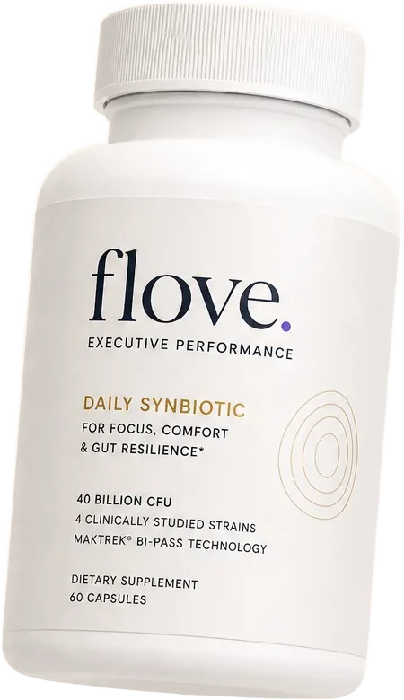
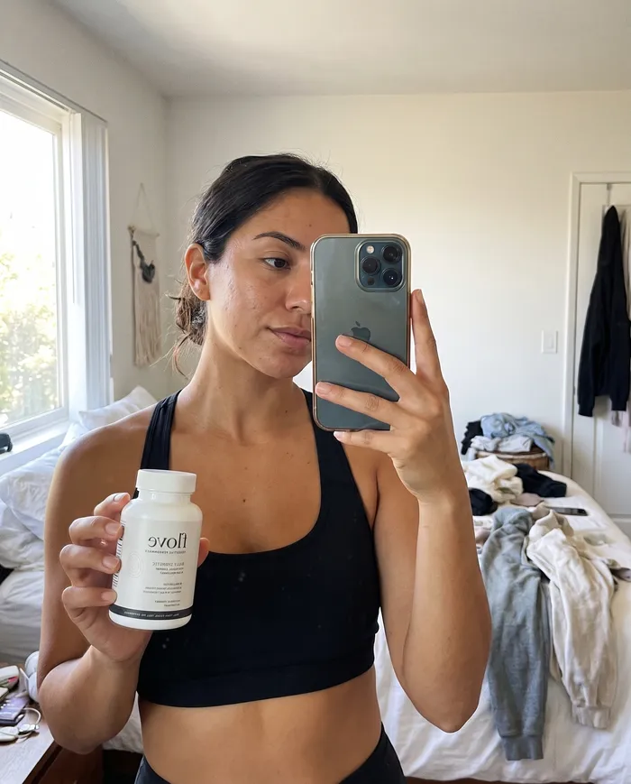
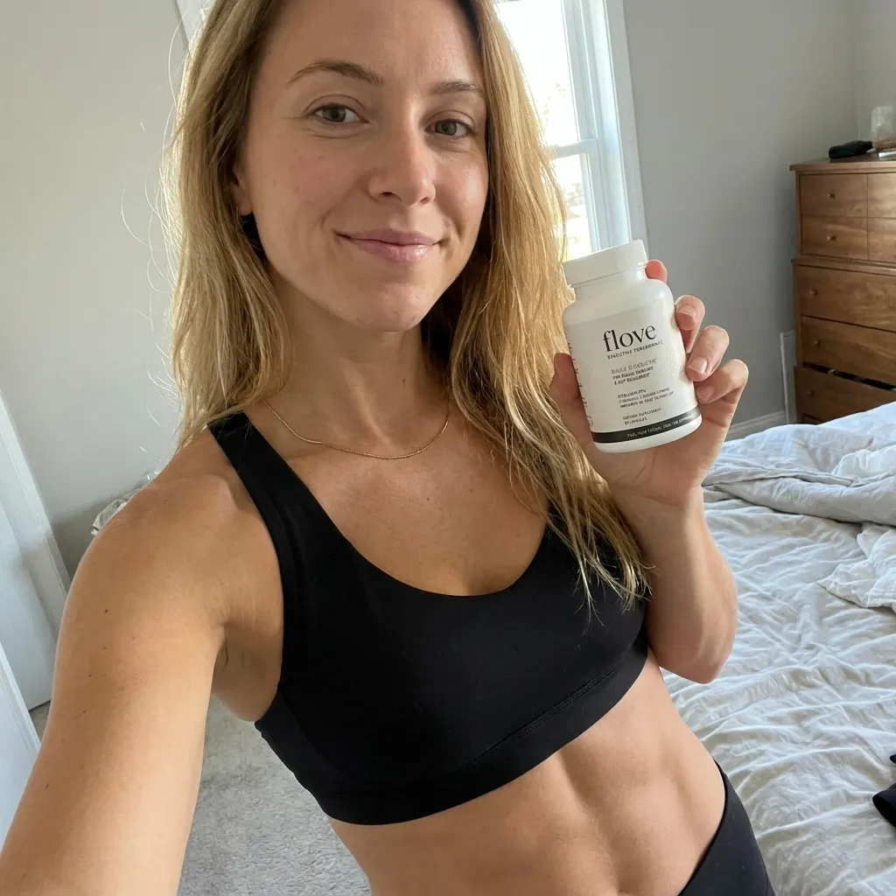

.png)
You're reading this because you're still bloated, despite trying everything on the shelves.
And before I lose you...
What I'm about to show you isn't some new shiny sugar pill, powder, or workout.
But something proven by science, with new, patented technology, loved by hundreds of gym girlies all across America, that fixes the exact reason greens powders, laxatives, and cheap probiotics didn't work.
I'm telling you this because I know you're exhausted.
You've tried the probiotics.
Maybe you started with the gummy ones from Target.
Then the refrigerated capsules a friend swore by.
Maybe you spent $99 a month on a greens powder that tasted like wet lawn clippings and promised to "fix your digestion."
But your stomach still swells up every afternoon.
You still suck it in when someone pulls out a camera at the gym.
You still have that one oversized hoodie you throw on when the bloating hits because you'd rather hide your body than explain it.
You know what the worst part is?
It's not the bloating itself. It's the fact that you did everything right.
You tracked your protein. Hit your macros. Trained five, six days a week.
And you still walk out of the gym looking like you skipped the last three months.
If any of that sounds familiar, keep reading.
Your bloating isn't a discipline problem, a genetics problem, or a "you" problem at all. It's an engineering problem.
And it starts inside the supplements you trusted.
The supplements you take to build your body are quietly wrecking your gut.
You drink protein shakes and preworkouts...
You eat protein bars between meals because they fit your macros.
All this is fine, but here's what's actually happening inside your gut every time you do it.
1. Your pre-workout is loaded with sucralose.
Your body can't digest it. It travels intact to your colon, where it feeds bad bacteria like E. coli and kills off part of the good bacteria.
That same sweetener is in your BCAAs, your energy drinks, and most "sugar-free" supplements on the shelf.
2. Your protein bars are sweetened with sugar alcohols.
Chemicals like erythritol, xylitol, sorbitol can't fully be absorbed by your body either.
They draw water into your colon and ferment fast.
Causing gas, water retention, and the sudden bloating that makes your leggings dig into you by 2pm.
3. Your whey protein contains a lot of lactose.
Lactose requires a specific enzyme called lactase to break down, but most adults don't produce enough of it.
So two or three shakes a day flood your colon with undigested dairy sugar.
It ferments, and you get the "protein bloat."
None of this is your fault. The fitness industry put these chemicals in your supplements to cut costs, then marketed them to you as "clean."
The probiotic you bought to fix it was dead before it reached your intestines.
At some point you thought: "Okay, my gut is clearly off. I'll take a probiotic."
Exactly what someone who does their homework would do.
But it didn't work.
Maybe you felt a little different the first week.
Maybe you got some gas and figured it was "adjusting."
Or maybe nothing happened at all.
Here's why.
Your stomach acid is very strong. Roughly the acidity of battery acid.
When you swallow a standard probiotic capsule or gummy, it dissolves in that acid within minutes. The bacteria inside are exposed directly to it.
Between 97% and 99% of them are destroyed before they ever reach your intestines.
For the more sensitive strains (the ones that actually flatten your stomach and reduces inflammation,) survival drops below 1%
That means the "40 Billion CFU" number on the label is almost meaningless.
If 97% die in your stomach, you're only getting 900 million bacteria to your gut from a 40-billion-count capsule.
And the strains that survive tend to be the hardier ones. Not the ones that actually flatten your stomach.
So when you say "I've tried probiotics and they didn't work" — you're right. They didn't.
But it's not because probiotics don't work.
It's because what you swallowed never made it to the place where it could.
This all-new technology takes survival from under 3% to 95%.
And it all came from marine biology.
Brown seaweed produces a natural substance that makes a protective shell when it hits acid and only wears off when the acid goes away.
So, supplement engineers figured out how to wrap probiotic cells in it.
Compared to the old, standard probiotic capsules that dissolve in your stomach on contact...
These new capsules are sealed tight.
Your stomach acid beats against it, but the shell holds.
It doesn't break until it passes through your stomach and reaches your lower intestines, where the bacteria are actually supposed to go.
Standard capsule: 1% to 3% survival. Marine-shielded capsule: 95% to 96% survival. A 20- to 40-fold increase in live bacteria delivered.
Most probiotic brands don't use this.
That's because the marine compound costs more to make than standard capsule shells.
And these big brands only care about profits, not quality.
So, to put more money in their pockets with "competitive pricing," they keep selling their sugar pills and rely on hype marketing.
But one brand isn't scared to provide quality.
They built their entire formulation around it and called it PhaseLock™.
40 billion CFU with PhaseLock delivers roughly 38 billion live bacteria to your intestines.
A 100-billion-count standard capsule delivers maybe 3 billion.
Every probiotic you've tried was delivering a fraction of what it promised. That should make you angry at the brands that sold it to you, not at yourself.

If you're starting to understand why nothing has worked, and you want to see the specific formulation that uses PhaseLock™ with a 4-strain blend designed for women who train hard and eat high protein:
See the Full Breakdown→⚡ Due to PhaseLock™ sourcing constraints, inventory is produced in limited batches. The current batch is in stock — check availability before it turns over.
One capsule a day was never going to be enough. Here's how the dosing actually needs to work.
Even with PhaseLock protecting the bacteria through stomach acid, there's still a problem with how most probiotics are dosed.
Every bottle you've bought says Take one capsule daily.
That sounds convenient, but it's part of the reason you're still bloated.
When you take a large, single dose of probiotics, your gut gets hit with billions of live organisms at once.
If your microbiome is already disrupted — and after months of sucralose and sugar alcohols, it almost certainly is — that sudden shift causes its own gas and discomfort.

Supplement companies call this "transition bloating."
Your gut is reacting to the shock of billions bacteria arriving all at once.
So you take a supplement to fix bloating... and it bloats you. Then you stop. Then you blame yourself for quitting too early.
But what they don't realize... is that your digestive system doesn't run the same way all day.
It operates in two distinct modes:


During the day, your gut is active — processing meals, breaking down protein, handling whatever you throw at it. This is when bloating happens.
At night, your gut shifts into repair mode.
Everything slows down. Stomach acid drops. This is the window where bacteria can actually attach to your intestinal wall and colonize without being swept through.
It's when the real structural repair happens — rebuilding your gut lining, clearing out the pathogenic bacteria that have been overgrowing for months.
A single morning capsule covers one window and misses the other entirely.
A good, quality probiotic would have to use a 2-capsule split protocol — one with your biggest meal, one before bed.
But there's still one thing left, and it's the one you were most afraid of losing.
You don't have to give up your protein shakes.
You've probably already started doing the math.
You read earlier that whey lactose is one of the biggest bloating triggers.
So your logical conclusion: "I have to stop drinking protein shakes."
No. You don't.
One of the four types of good bacteria in this formula is Lactobacillus acidophilus (La-14).
La-14 produces lactase — the exact enzyme that breaks down the lactose in your shakes (which your body underproduces) keeping your stomach flat, even after two or three protein shakes.
Your body can't break down lactose fast enough when you're drinking two or three shakes a day.
So, La-14 picks up where your body leaves off.
It produces the missing enzyme right where the breakdown needs to happen.
You keep your shakes and keep hitting your protein target.
The lactose just gets digested properly instead of sitting in your colon producing gas.
This is why strain selection matters more than CFU count.
A 100-billion-CFU probiotic with strains that don't produce lactase won't touch your protein bloat.
A 40-billion-CFU formula with La-14, delivered alive through PhaseLock, will.
La-14 is the only reason you get to keep the shakes. Most "40 billion CFU" labels never mention which strains they're actually counting, or whether any of them produce lactase at all. See the full 4-strain panel and what each one is doing in your gut:
See the Full Strain Panel →⚡ Current batch is in stock. PhaseLock™ runs in limited production batches, so this sells through faster than a standard capsule.
The greens powder and the detox tea were doing something. Just not what you paid for.
So the probiotic side makes sense now.
But there are probably two other things sitting in your kitchen.
The tub of greens you spent $99 on. And the box of tea that promises a flat stomach by morning.
Both are still in the rotation because on some level they felt like they were doing something.
Here's what they were actually doing:
The greens powder.
Most of them are built on inulin and chicory root fiber, dosed in grams.
Fiber isn't the problem. The volume is.
By the time you're under the bar, that fiber is fermenting in your colon and producing gas.
All that pressure causes discomfort. It isn't your form or what you ate.
The bacteria that survive in your gut do need a little prebiotic fiber to feed on, not a truckload.
The detox tea.
These run on senna or cascara sagrada. Both are stimulant laxatives.
They don't reduce bloating. They empty your colon.
You will look flatter the next morning. That part is real. It's also just an empty colon and a couple pounds of water, and it's back inside two days.
The cost is that your bowel starts depending on it. Use them long enough and you can't go to the bathroom without it.
You can't force out bloating caused by gas. It's being produced by the bacteria that already live there.
The only thing that works is crowding those bacteria out with better ones, and feeding the good ones just enough to hold their ground.
Which is where all six of these finally land in the same place.
So here's where all of this leads.
You've been dealing with this for months.
Maybe years, but nothing seems to work.
Not because you haven't tried, but because every product you've used was
- - causing the problem (your supplements)
- - dying before it could help (your probiotics)
- - cramping you mid-lift (your greens powder)
- - creating dependency (your detox tea).
If you're tired of trying the next thing that doesn't work (or even, make your bloating worse!)
Then I have good news...
The brand that features the PhaseLock capsules and good bacteria that kill the protein shake bloat...
Are running a MASSIVE 45% discount sale right now.
Here's What 889+ Women Are Using To Flatten Their Bellies Freakishly Fast!
A few things people ask before they order.
How long until I actually notice a difference?
Most people notice less distension within the first one to two weeks. Full colonization, where the strains are established on your gut wall, takes six to eight weeks, which is why the guarantee window is built to outlast it.
Do I need to take it with food, or around my workouts?
Take the daytime capsule with your biggest meal, so La-14 is on hand when your whey or protein bloat risk is highest. The nighttime capsule goes before bed on an emptier stomach, when gastric acid is lowest and the strains can attach without being swept through.
Can I take it alongside creatine, pre-workout, or my other supplements?
Yes. PhaseLock™ only affects how the capsule survives your stomach acid, it doesn't interact with creatine, caffeine, or other training supplements.
Is it vegan, gluten-free, and allergen-free?
Yes to all three. There's no dairy, soy, or gluten in the formula.
Does it need to be refrigerated?
No. The PhaseLock™ shell is what protects the bacteria, both in the bottle and in your stomach, so it's shelf-stable at room temperature.
What if it doesn't work for me?
You're covered by the 60-day guarantee. If you don't notice a difference, you get a full refund, no questions asked.

“I've tried three other probiotics and a $90 greens powder before this. This is the first one where I actually noticed a difference by the end of week one.” — Client, competitive powerlifter

“Flove cut down my bloating SO fast. Even my boyfriend noticed my stomach was flatter around 7 days in!” — Client, marathon runner
“I've tried three other probiotics and a $90 greens powder before this. This is the first one where I actually noticed a difference by the end of week one.” — Gabriela M., competitive powerlifter
“Flove cut down my bloating SO fast. Even my boyfriend noticed my stomach was flatter around 7 days in!” — Sally P., marathon runner
You've paid for this kind of promise before.
So here's the part that actually matters.
There's probably a $70 bottle of premium probiotics somewhere in your cabinet that made you worse for three weeks. Or most of a $99 tub of greens you're never going to finish.
60 days, full refund.
Colonization takes six to eight weeks. The guarantee is built to outlast the time the product needs to work, so you're never deciding before you know.
Subscriptions are optional. Most of our top subscribers started with a one-time subscription to test the waters.
Most women notice something in the first week or two. If you don't, you send one email and you get your money back.
Meet Ana, Who Tried Too Many Things Before Finding Flove.
One thing about timing.
PhaseLock is a seaweed extract. It is grown, harvested, and processed in batches, and the capsule can't be made without it.
So production runs in batches too. When the current run sells through, the next one is four to six weeks out.
Six weeks is roughly another hundred protein shakes going into a gut that still can't break down the lactose in them.
If it's in stock when you click, that's your window.